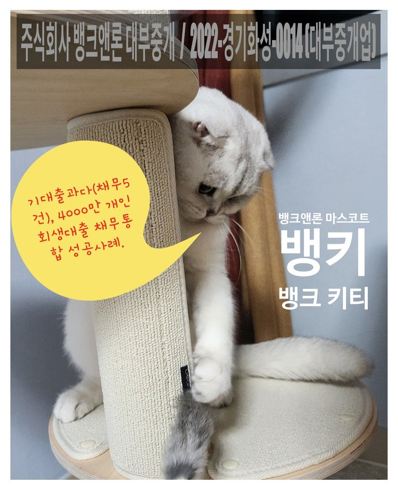
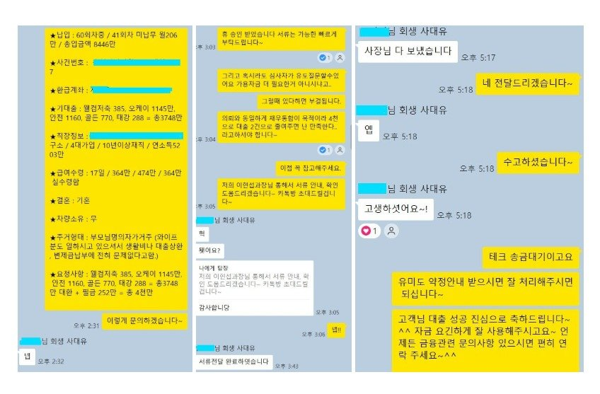
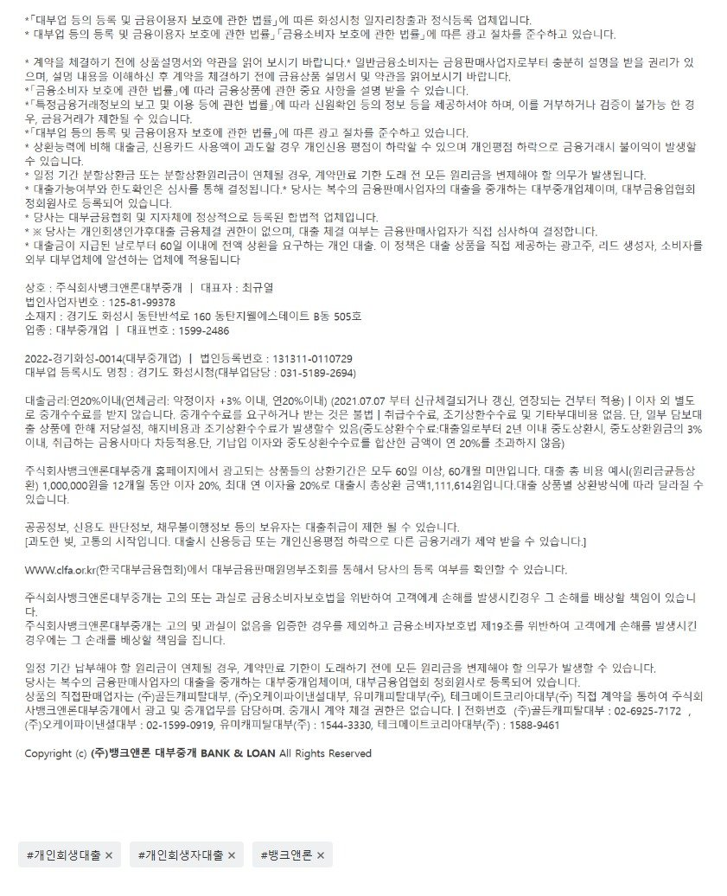

[개인회생대출] 기대출과다(채무5건)자, 4000만 개인회생대출 채무통합 성공사례. (대환대출필독사례!!)

안녕하세요~ 주식회사 뱅크앤론 대부중개 입니다. 당사는 업력 16년이상된, 10년이상 대출/금융업 부분 고객만족 및 브랜드대상을 수상한 믿을 수 있는 기업입니다. (수상기관 : 조선일보, 해럴드경제, 스포츠조선, 스포츠동아, 한경닷컴, 스포츠서울, 일간스포츠.)
오늘 소개해드릴 개인회생대출 사례는 제목에서 알 수 있듯이, 기대출5건에 금액도 4천만 가까이 과다하게 사용중인 고객님의 개인회생대출 성공 사례 입니다. 아래 캡쳐 이미지 통해서도 아실 수 있지만 인센이 없는 평달에는 실수령급여액이 364만원이신데 회생월변제금액이 206만원 그리고 한달 대출 상환금액이 100만정도 되셨습니다. 보통 최저생계비를 월100만원정도로 산정을 하는데요, 그럼 월 40만원정도 마이너스인 상황이셨습니다. 물론 급여를 더 받는달도 있으니 많이 오바했다고 볼수는 없으나, 금융사 심사가 기본적으로 보수적이기에 다른 모든 금융사들 부결이 되는 상황입니다. 심사에 채무건수도 매우 중요하게 보고 있습니다.
사실 해당 고객님은 9월부터 지속적으로 유미로 사전문의를 해드렸습니다. 승인률 탑이라 할 수 있는 유미도 9월, 10월 계속해서 어렵다는 답을 주었었습니다. 이번에 3번째 시도였는데 이번에 매우 강하게 어필할수있는부분이 이 부결이 되는 기간동안에도 변제금을 전혀 미납없이 잘 납부해오셨다는것이였습니다. 심사자들도 대충보고 판단하는것이 아니기에 기억을 하고 있습니다. 전 이부분을 아주 강하게 어필하여 결국 유미 2000, 테크 2000만 승인되어서 기대출 5건을 2건으로 통합하고 약간의 생활자금마련도 도움드렸습니다. 면책후 채무통합사례들을 통해서 (참고 : https://cafe.naver.com/cityman88/309305)
원본 백업에 없거나 외부 접근이 제한된 이미지입니다.
[회생면책자대출필독] 면책직후 대부3건을 연금리13%로 채무통합에 성공한 사례!! (회생중이신분들도 꼭 보셔서 미리 준비하셔야 함!!!!)
안녕하세요~ 주식회사 뱅크앤론 대부중개 입니다. 당사는 업력 16년이상된, 10년이상 대출/금융업 부분 고객만족 및 브랜드대상을 수상한 믿을 수 있는 기업입니다. (수상기관 ...
대출 건수의 중요성은 여려번 강조드렸습니다. 채무관리의 편리성은 두말할것도 없고 면책이후 개인회생대출 저금리로 대환 및 통합하는데 매우 중요하며 이덕분에 빠르게 신용회복을 할 수 있게됩니다. 이렇기에 당사는 절대 포기하지 않고 고객님들께 조언드리며 꾸준하게 관리해드리고 꾸준하게 개인회생대출 사전문의, 접수 도움드리고 있습니다.
이처럼 개인회생자대출은 믿을 수 있고 항상 최선을 다하는, 그리고 경험많은 전문적인 중개사를 통하는것이 매우 중요합니다. 문의주시는 모든 고객님들께 친절하고 최선을 다해서 도움드릴 것을 약속드립니다.

뱅크앤론매니저의 연락처는 010-2506-2425 [(주)뱅크앤론 사장 김용혁] 입니다~ 제 번호 저장후 카톡주시거나 전화 주시면 매우 친절하고 신속하게 필요한 도움 드리겠습니다. (상담가능시간 : 월~목 09시~18시 / 금 09시~16시)
또는 아래 상담신청하는 링크 클릭하셔서 상담신청 남겨 주시면, 업계 최고의 실력을 갖춘 당사의 전문 상담직원들 통해서 매우 친절하고 신속한 도움 받으실 수 있습니다. 감사합니다.^^
상담신청 -> https://cafe.naver.com/cityman88/29497
뱅크앤론의 개인회생자대출이 좋은이유 - https://youtu.be/oYRa4K_O_-0

https://cafe.naver.com/cityman88/309469